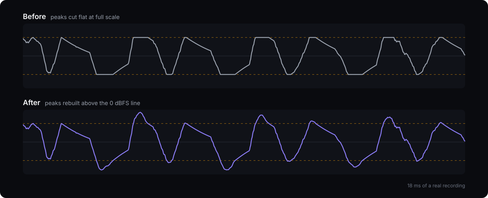
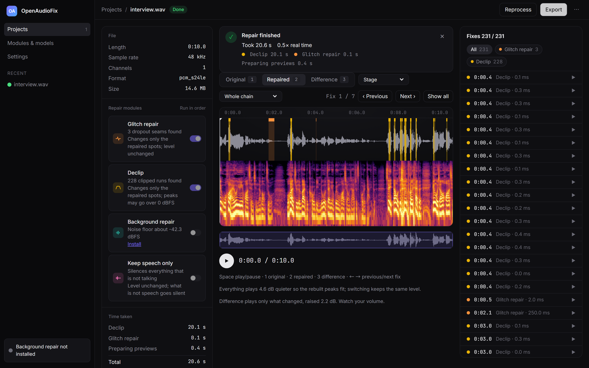

Hear the repair.
Ten seconds of a real recording, damaged by too much input gain and audio-interface dropouts. Press play, then switch while it runs.
All three are the same 256 kbps MP3 export at the same gain, so only the repair differs. Difference is what was changed, and nothing else.
228clipped peaks rebuilt
3dropout seams repaired
94.5%of samples left exactly as recorded
Peaks, rebuilt

You see every fix

Runs on your computer
No account and no upload. Your recordings stay on your machine.
docker run -p 127.0.0.1:8765:8765 -v openaudiofix-data:/data ghcr.io/romanticamaj/openaudiofix:0.1.1Get OpenAudioFix